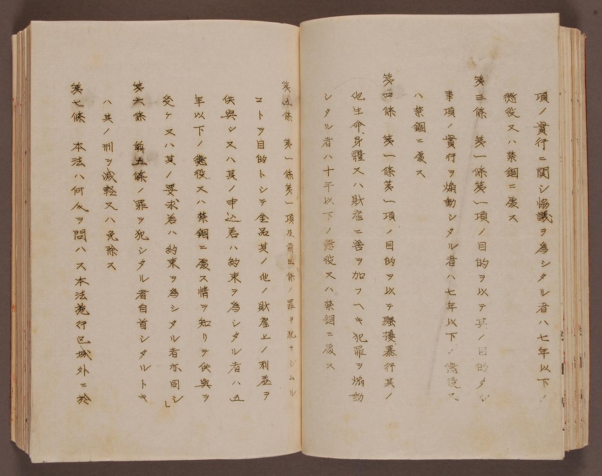

(Article 9)This image is of a very important document, often labeled on of the most important pre war pieces of legislature passed in Japan. Passed in 1925, this law was indicative of the general political climate in Japan at the time, in that it was harshly anti-Communist and anti-Socialist. Japan adopted these traits partially from capitalist Western nations and partially as a consequence of the nation's long running hatred of China, which had recently adopted a Communist government. The reaction against Communism in the favor of Capitalism is clearly the result of the Western trade influences in Japan.